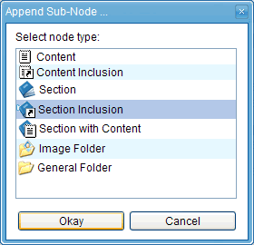
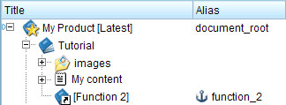

1.11.1. Structural inclusions
A structural inclusion allows you to insert a node at a position within the content-tree, although the actual position of the node is somewhere else.
In our example we will include the section "Function 2" as a sub-node of the "Tutorial" section. Therefore, right-click the "Tutorial" section and choose "Add Sub-Node ..." from the context menu. In the following dialog choose the node type "Section Inclusion" (because we want to include a section-node):

Figure 1.11.1. Selecting the node type "Section Inclusion"
This will open the section-reference dialog, where you can enter the alias name of the section you want to include. In our example fill in the alias name "function_2":

Figure 1.11.2. Section reference dialog
Alternatively you can just enter the first letter(s), e.g. "f" and then select the alias name from the drop-down list.
You can leave the title field empty, except you want to overwrite the title of the included section with another title. Click the "Okay" button to create the section-inclusion node.
The "Function 2" section is now included as child-node of the "Tutorial" section:

Figure 1.11.3. Section inclusion child-node
Now, create some content in the "Function 2" section, e.g. a paragraph with the text "This is the description of function 2.". When you now preview the "Tutorial" section as well as the "Reference Manual" section, you'll see that the created content appears in both sections.
Important!
As you have seen, using the inclusion mechanism, the same node can appear at different positions within the product-tree. Though, it is not allowed to have the same node more than once in an exported publication. It's the responsibility of the publication manager to assure this. The reason for this is, that a node can itself contain objects (e.g. images, tables, sub-sections, ...) that have an alias name or an ID value assigned. Therefore, if such a node would appear more than once in a publication, the publication would contain objects with the same identifier (alias or ID) at different locations. If such an object would be referenced, the target of the reference would be ambiguous. In the example given above, this situation would occur if a publication would be exported that contains the "Reference Manual" section as well as the "Tutorial" section.
In the example above we've included a section-node. It is also possible to include a content-node. To do this, you have to create a node of type "Content Inclusion" instead of "Section Inclusion".
Note:
Extensive use of structural inclusions is discouraged, because it can lead to complex dependencies and unwanted side effects. Nevertheless, there might be few cases where structural inclusions can be useful (e.g. including the same appendix section in different publications). If you use structural inclusions, then you should think about putting all included nodes in a separate section. For example, in the example above you could create a section named "Common" which is on the same level as "Tutorial" and "Reference Manual", but contains only nodes which are included in both publications.